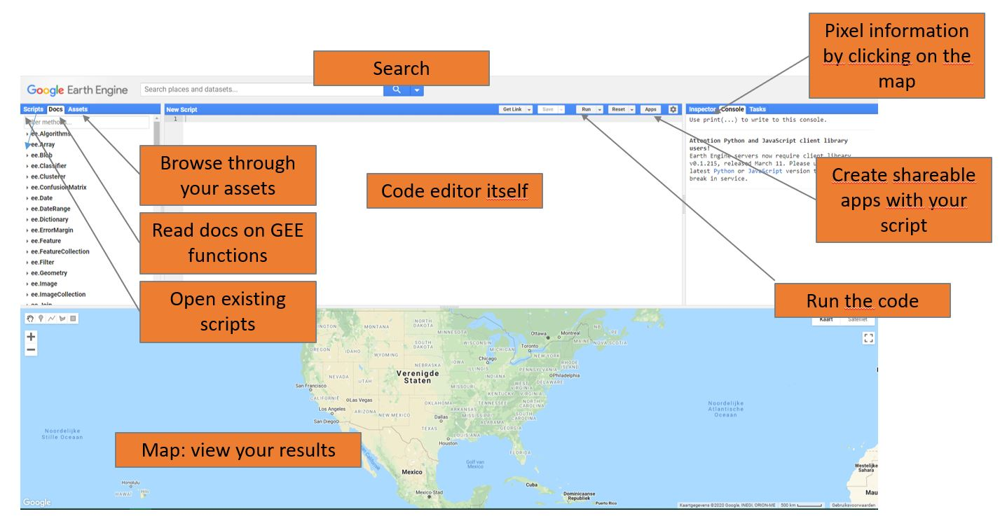

Introductie tot Earth Engine
De Google Earth Engine Interface

The Google Earth Engine code editor interface.
De interface van de Earth Engine code editor is op zich vrij simpel. Er kunnen 5 grote blokken onderscheden worden:
- Het linkerpaneel, met 3 tabs:
- Scripts: je eigen bibliotheek met scripts, onder te verdelen in repositories, folders en scripts. Ook de scripts waar je schrijf- en leesrechten hebt kun je hierin terugvinden.
- Docs: Bevat informatie over de functies die beschikbaar zijn in Earth Engine. Hier kun je snel de functionaliteiten en beschrijving van de input- en outputparameters terugvinden.
- Assets: oplijsting met de 'assets' die je opgeladen/aangemaakt hebt in Earth Engine. Assets kunnen rasters of vectoren (met bijvoorbeeld trainingsdata of studiegebied).
-
De code editor zelf in het middenpaneel, waar je scripts kunt aanmaken/bewerken, delen en opslaan.
-
Het rechterpaneel, met 3 tabs:
- De Console: waar eventuele output of foutmeldingen naar geschreven worden. de 'print()'-functie wordt steeds gebruikt om hier informatie te bekijken.
- De Inspector: hiermee kun je op specifieke pixels in de 'map view' klikken, waarna de overeenkomstige pixelinformatie wordt gevisualiseerd.
- De Tasks: bevat een oplijsting van de 'exports' die in het script werden aangemaakt (als je bijvoorbeeld een satellietbeeld naar je Google Drive wenst te sturen). Een export moet hier steeds nog manueel gestart worden.
-
De Map View: waar het beeldmateriaal wordt gevisualiseerd.
-
De zoekfunctie waarmee beeldmateriaal beschikbaar binnen de Google Cloud kan worden opgezocht.
Earth Engine code: Javascript 101
Google Earth Engine maakt voor zijn code-editor gebruik van Javascript als programmeertaal, maar om vertrouwd te geraken met GEE hoef je geen Javascript-expert te worden. GEE gebruikt namelijk hoofdzakelijk eigen 'classes' en functionaliteiten, waardoor je slechts een basiskennis javascript nodig hebt.
Daarom starten we eerst met een spoedcursus Javascript, waarop we onze verdere 'Earth Engine'-magie kunnen bouwen.
"Hello World"
De 'print'-functie
Zoals gebruikelijk is bij het leren van een programmeertaal, groeten we de wereld met ons eerste lijntje code.
- Open https://code.earthengine.google.com/, en voeg volgend lijntje toe aan het nieuwe script.
//Printen van Hello World
print('Hello World')
Verder valt hieruit ook op te merken dat een dubbele voorwaartse slash '//' gebruikt wordt om notities te nemen binnen de code.
Strings
Proficiat! Het eerste scriptje is geschreven. Laat ons deze string nu onderbrengen in een variabele. In Javascript dient een variabele altijd geïniteerd te worden met var statement. Indien je dit zou weglaten, zal je op een 'error' stoten.
//Aanmaken van de variabele 'aString'
var aString = 'Hello World'
print(aString)
Om het datatype van de variabele aString na te gaan, kun je dit oproepen met de functie ‘typeof()’-statement:
// Type van de variabele aString naar de Console schrijven
print(typeof(aString))
Functies
Een functie in Google Earth Engine ziet er uit volgens volgende opbouw:
var functienaam = function(inputvariabelen) {
//Hier de functie-bewerkingen
//output = a + b
return output
};
//Hello Function:
var hello_function = function(String) {
var goeindag = 'Hello ' + String
return goeindag
};
//Functie uitvoeren:
var hallo = hello_function('Boerekot');
print(hallo)
//Variabelen aangemaakt binnen de functie worden enkel daar gebruikt.
// Ze gebruiken buiten de functie levert dus foutmeldingen op:
print(goeindag)
Lijsten
Een lijst in Javascript wordt steeds opgegeven met [ en ]. Een lijstindex begint steeds vanaf '0', waarbij de eerste waarde dus op positie 0 staat.
var lievelingsnummers = [8,6,3,27]
print('Eerste lievelingsnummer in de lijst = ', lievelingsnummers[0])
//Lijstelementen aanpassen
var automerken = ["BMW","Volkswagen","Minerva"]
automerken[2] = ["Opel"]
print(automerken)
Objecten
Een Object wordt aangegeven met '{' en '}'. Aan een object hangen steeds enkele variabelen die tot het object behoren.
//object
var beelden = {
Sensor: "Sentinel 2",
Regios: ["Belgium","France","Vaticano"],
Aantalbeelden: 2,
1: "Ja"
}
Om een eigenschap van een object op te roepen, wordt stees een puntje '.' gebruikt: object.eigenschap. Indien we bijvoorbeeld de sensor van ons aangemaakte beeldmateriaal willen nagaan:
// Sensor bekijken
print(beelden.Sensor)
// Andere methode via haakjes []
print('Regios: ', beelden['Regios'])
Javascript referenties
Het spreekt voor zich dat we hier slechts de basic-syntax van Javascript hebben aangehaald. Het is zeker niet nodig om eerst Javascript onder de knie te krijgen om in Google Earth Engine te kunnen werken. Aangezien Google Earth Engine slechts specifieke codes gebruikt, zul je doorheen de practica het nodige leren.
Specifieke Earth Engine objecten
ee.Image
Een Image is rasterdata bestaande uit één of meerdere banden, waarvan elke band een eigen naam, datatype, resolutie en projectie heeft. Een enkel Sentinel-2 beeld zoals in Practicum 3 gedownload werd, zal als één Image kunnen worden opgeslagen.
Om een Image in te laden en Earth Engine wordt gebruik gemaakt van ee.Image. In volgend hoofdstuk wordt dit geïllustreerd.
ee.ImageCollection
Een ImageCollection is een collectie van meerdere Image's. De Sentinel-2 MSI Level-2A collectie bevat bijvoorbeeld het volledige aanbod aan atmosferisch gecorrigeerde Sentinel-2 beelden. Elke collectie bevat verdere informatie in de Data Catalog. Een collectie is steeds in een bepaalde volgorde gesorteerd zijn. Standaard is dit o.b.v. datum, maar aangepaste sorteringen zijn eveneens mogelijk, zoals we in een komende oefening gaan zien.